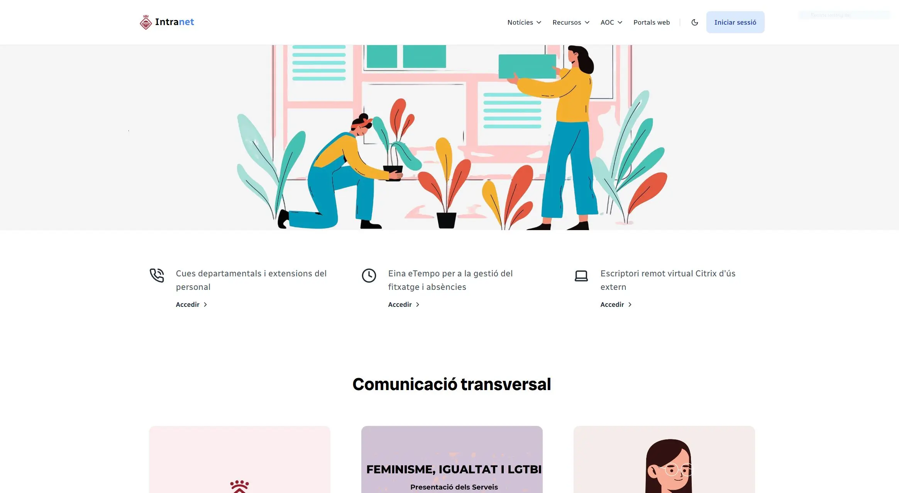

Intranet
Plataforma de comunicación interna que facilita la colaboración y la gestión de recursos.
Mi objetivo es crear aplicaciones web que aporten soluciones reales con un diseño limpio y accesible.
"The beautiful thing about learning is that nobody can take it away from you. The journey of growth never ends; each challenge is an opportunity to become better than you were yesterday."
— B.B. King
Soy desarrolladora full stack con especial interés en el ámbito frontend y la accesibilidad web. Desarrollo interfaces intuitivas, dinámicas y accesibles metiante el stack de tecnologías TALL.
Quiero seguir aprendiendo y mejorando en cada proyecto, construir una base sólida de mis conocimientos y optimizar la experiencia del usuario. 🚀
Plataforma de comunicación interna que facilita la colaboración y la gestión de recursos.
Landing page dedicada a un espectáculo navideño donde se facilita información del mismo.
Página web de una tienda de videojuegos que ofrece una amplia selección de productos y servicios para sus clientes.
Página web destinada a promocionar y dar visibilidad a los artistas locales.
2022 - Actualidad
Ajuntament de Sant Andreu de la Barca
Desarrollo y mantenimiento de aplicaciones web
Desarrollo de aplicaciones web tanto para herramientas de gestión internas (Intranet, Agenda de entidades) como para aplicaciones para la ciudadanía (Espai Joventut, Sant Andreu és talent). Gestión y mantenimiento de bases de datos MySQL y desarrollo APIs REST para integraciones de servicios externos.
Soporte en administación electrónica
Realizo tareas de soporte y mantenimiento de Workflow del gestor de expedientes BPM de la empresa Audifilm y desarrollo de formularios electrónicos basados en su sistema Genesys. Además, me encargo de realizar documentación y formación a los usuarios.
2024
Gamers Palma
Aplicación de fidelización para la tienda
Desarrollé la interfaz de la aplicación, la cual permite a los clientes acumular puntos por sus compras en tienda y canjearlos por ofertas. Realicé el diseño basándome en la aplicación de compra de la tienda para asegurar la coherencia de la identidad de la misma. Se trabajó con especial cuidado en el apartado responsive, dado que la aplicación se usaría casi de manera exclusiva en dispositivos móviles.
2021 - 2022
Ajuntament de Sant Andreu de la Barca
Desarrollo y mantenimiento de la web municipal
Creé y modifiqué secciones de la página web municipal, desarrollando y maquetando interfaces con HTML, CSS y Bootstrap. También me encargué de realizar la sección de los trámites en PHP nativo y Laravel.
Si quieres contactar conmigo, estoy disponible para colaborar en proyectos y aprender conjuntamente. 🚀👩💻
Conectar en LinkedIn